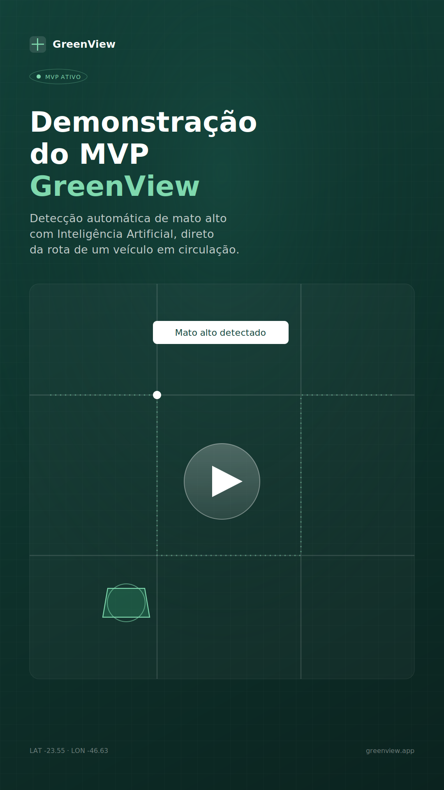

Transformando cidades através da Inteligência Artificial.
O GreenView identifica problemas urbanos automaticamente — a partir dos veículos que já circulam todos os dias na sua cidade. Sem novos equipamentos, sem novas rotas.
De uma rota de rotina a um mapa de decisão.
O GreenView acopla captura de imagem e IA ao trajeto que a frota municipal já percorre — transformando cada viagem em uma leitura contínua da cidade.
Veículos da cidade
Caminhões de coleta, fiscalização e frotas municipais já em circulação.
Captura de imagens
Câmeras acopladas registram o entorno automaticamente, sem intervenção do motorista.
Inteligência Artificial
Modelos de visão computacional identificam padrões de ocorrência em tempo real.
Mapa inteligente
Ocorrências são geolocalizadas e priorizadas automaticamente por severidade.
Gestão pública
A secretaria responsável recebe alertas prontos para ação, sem fiscalização manual.

Nosso MVP já identifica automaticamente áreas com mato alto, usando Inteligência Artificial.
- Detecção validada em campo, sem depender de denúncias da população.
- Funciona com câmeras acopladas a veículos já em circulação.
- Arquitetura pensada para receber novos módulos de detecção.
O que muda na rotina da secretaria.
Menos deslocamento dedicado à fiscalização, mais tempo para quem decide e executa.
Redução de custos
Sem deslocamentos exclusivos para fiscalização, o custo por ocorrência identificada cai.
Fiscalização contínua
A cidade é lida todos os dias, não apenas quando há uma denúncia ou vistoria agendada.
Maior cobertura
Cada rota já percorrida amplia a área monitorada sem esforço adicional da equipe.
Priorização automática
Ocorrências são ordenadas por severidade e tempo em aberto, sem triagem manual.
Decisão baseada em dados
Histórico de ocorrências por bairro apoia planejamento orçamentário e de equipes.
Cidade mais eficiente
Recursos públicos direcionados para onde realmente há ocorrência, não onde há suspeita.
Um módulo em operação. Quatro a caminho.
A ordem dos próximos módulos será ajustada de acordo com as respostas desta pesquisa.
Ajude a validar o GreenView com sua prefeitura.
Uma pesquisa completa de 5 etapas sobre o problema, o processo atual e o interesse em um projeto piloto. Leva cerca de 5 minutos e seu progresso é salvo automaticamente.